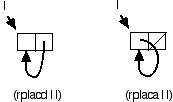

Assignment is very different from binding, and in many cases results in programs that are harder to understand. Despite this, there are (sometimes) reasons to prefer assignment. In this chapter, we'll explore assignment and its relationship to destructive modification of data. We'll also explore several Lisp functions that implement destructive modification.
Any time your program invokes SETQ or
SETF, it is assigning a new value to an existing
storage location, destroying the value that was previously in that
location. As we'll see in this chapter, there are both risks and
benefits to the use of assignment; you need to understand the
tradeoffs in order to write Lisp code that is both correct and
efficient.
Any time you define a function that uses variables, the variables
are either bound or free. A bound variable
occurs within a binding form that occurs within the function
definition. A binding form is just a form that creates a new
association between the name of a variable and a place to store its
value; the most common binding forms are LET and the
argument list of a DEFUN or LAMBDA.
There's a slight terminology clash in the use of the word bound. The clash is always resolved by the context of the word's use, but you need to be aware of the two meanings. In this chapter we're talking exclusively about a variable name being bound to a place to store its value; when we say that Lisp creates a binding for a variable, we mean that it creates a new place to store a value under a given name.The other sense of bound -- not otherwise discussed in this chapter -- is the binding of a value to a storage location; Lisp supports the notion of an unbound -- or nonexistent -- value.
A variable is free within a function if the function
provides no binding form for the variable's name. In the following
example, the variable E is free in both functions
CLOSURE-1 and CLOSURE-2.
? (let ((e 1))
(defun closure-1 () e))
CLOSURE-1
? (closure-1)
1
? e
Error: unbound variable
So, what happens when a function has to reference a free variable? Lisp creates a closure that captures the bindings of free variables for the function. Variables that are free within a function really do have bindings, but the bindings are outside of the function definition. When Lisp executes the function, it finds free variables in the closure. (We'll examine closures in greater detail in Chapter 15.)
Closures are important because they let a function
capture and retain lexical bindings. Take another look
at the example above. When we evaluated (CLOSURE-1),
the variable E was no longer visible at the top level
prompt. But because the function had a closure for that variable, it
still has access to its binding.
Let's extend the previous example just a little.
? (let ((e 1))
(defun closure-1 () e)
(setq e 7)
(defun closure-2 () e))
CLOSURE-2
? (closure-1)
7
? (closure-2)
7
Do you understand why (CLOSURE-1) returned 7 rather
than 1? We created a binding for the variable E and
gave it an initial value of 1. Even though CLOSURE-1
was defined when E's value was 1, this doesn't matter:
the closure captures the binding -- the association between the name
and the storage location. When we assigned 7 as the value of
E (just before defining CLOSURE-2), we
changed only the one storage location for that binding. Since both
functions' free variable E is closed over the same
binding, they must retrieve the same value.
This behavior can be used to good effect.
? (let ((counter 0))
(defun counter-next ()
(incf counter))
(defun counter-reset ()
(setq counter 0)))
COUNTER-RESET
? (counter-next)
1
? (counter-next)
2
? (counter-next)
3
? (counter-next)
4
? (counter-reset)
0
? (counter-next)
1
However, some Lisp iteration forms bind their iteration variables
just once, then assign new values on subsequent iterations.
DO and DO* assign to their iteration
variables. DOLIST and DOTIMES are allowed
to assign to their iteration variables (and probably will in any
implementation, because it is more efficient). You need to keep this
in mind if you write code that creates a closure for an iteration
variable. This example illustrates the point (see Chapter 12 if you want to read about
MAPCAR):
; Closure captures assigned variable -- probably wrong
? (let ((fns ()))
(dotimes (i 3)
(push #'(lambda () i) fns))
(mapcar #'funcall fns))
(3 3 3)
; New bindind created for each captured variable
? (let ((fns ()))
(dotimes (i 3)
(let ((i i))
(push #'(lambda () i) fns)))
(mapcar #'funcall fns))
(2 1 0)
We've seen that assignment can cause unexpected behavior in the presence of closures. Assignment can also cause problems when shared data is involved.
? (defun nil-nth (n l)
"Set nth element of list to nil and return modified list."
(setf (nth n l) nil)
l)
NIL-NTH
? (defparameter *my-list* (list 1 2 3 4))
*MY-LIST*
? (nil-nth 1 *my-list*)
(1 NIL 3 4)
? *MY-LIST*
(1 NIL 3 4)
WARNING: If you're accustomed to programming in a language that allows by-reference modification of function parameters, the previous code snippet may seem very tantalizing to you. My advice is to put aside all thoughts of using this to emulate by-reference parameters, and use multiple values (Chapter 3, Lesson 9) to safely and efficiently return multiple results from a function.
The above example is not wrong, but it is dangerous. Except in
very special situations, we'd like our functions to accept arguments
and return values. The problem with NIL-NTH is that it
assigns a new value within the list passed as a parameter. In our
example, this list is global, and may be shared by other parts of the
program. If all we really wanted to do was to get a copy of the
argument list with the Nth element set to NIL, then we
shouldn't have altered the passed argument. Here's a better way
to implement NIL-NTH:
? (defun nil-nth (n l)
"Return list with nth element set to nil."
(if (zerop n)
(cons nil (rest l))
(cons (car l) (nil-nth (1- n) (rest l)))))
NIL-NTH
? (defparameter *my-list* (list 1 2 3 4))
*MY-LIST*
? (nil-nth 1 *my-list*)
(1 NIL 3 4)
? *MY-LIST*
(1 2 3 4)
If assignment is so fraught with peril, why not just omit it from the language? There are two reasons: expressiveness and efficiency. Assignment is the clearest way to alter shared data. And assignment is more efficient than binding. Binding creates a new storage location, which allocates storage, which consumes additional memory (if the binding never goes out of scope) or taxes the garbage collector (if the binding eventually does go out of scope).
Some operations on lists (and sequences -- see Chapter 12) have both destructive and nondestructive counterparts.
Nondestructive Destructive -------------- ----------- SUBLIS NSUBLIS SUBST NSUBST SUBST-IF NSUBST-IF SUBST-IF-NOT NSUBST-IF-NOT APPEND NCONC REVAPPEND NRECONC BUTLAST NBUTLAST INTERSECTION NINTERSECTION SET-DIFFERENCE NSET-DIFFERENCE SET-EXCLUSIVE-OR NSET-EXCLUSIVE-OR UNION NUNION REVERSE NREVERSE REMOVE DELETE REMOVE-IF DELETE-IF REMOVE-IF-NOT DELETE-IF-NOT SUBSTITUTE NSUBSTITUTE SUBSTITUTE-IF NSUBSTITUTE-IF SUBSTITUTE-IF-NOT NSUBSTITUTE-IF-NOT REMOVE-DUPLICATES DELETE-DUPLICATES
All of these pairings have the same relationship: the destructive
version may be faster, but may also alter shared structure. Consider,
for example, APPEND and NCONC. Both append
the lists supplied as their arguments.
? (append (list 1 2 3) (list 4 5 6)) (1 2 3 4 5 6) ? (nconc (list 1 2 3) (list 4 5 6)) (1 2 3 4 5 6)
But NCONC may destructively modify all but the final
list; it may change the tail of each list to point to the head of
the next list.
? (defparameter list1 (list 1 2 3)) LIST1 ? (defparameter list2 (list 4 5 6)) LIST2 ? (append list1 list2) (1 2 3 4 5 6) ? list1 (1 2 3) ? list2 (4 5 6) ? (nconc list1 list2) (1 2 3 4 5 6) ? list1 (1 2 3 4 5 6) ; Oops - compare to previous result! ? list2 (4 5 6)
A list is constructed of CONS cells. Each CONS has
two parts, a CAR and a CDR (review Chapter 3, Lesson 4). The CAR holds the
data for one element of the list, and the CDR holds the CONS that
makes up the head of the rest of the list.

By using RPLACA and RPLACD to change
the two fields of a CONS, we can (destructively) alter the normal
structure of a list. For example, we could splice out the second
element of a list like this:
? (defparameter *my-list* (list 1 2 3 4)) *MY-LIST* ? (rplacd *my-list* (cdr (cdr *my-list*))) (1 3 4) ? *my-list* (1 3 4)
We can also use these "list surgery operators" to create circular lists.
? (let ((l (list 1)))
(rplacd l l)
l)
(1 1 1 1 1 1 1 1 ... ; Continues until interrupt or stack overflow
? (let ((l (list 2)))
(rplaca l l)
l)
(((((((((((((((( ... ; Continues until interrupt or stack overflow

We can get the same effect using (SETF CAR) in place
of RPLACA and (SETF CDR) in place of
RPLACD.
(rplaca cons object) is (setf (car cons) object) (rplacd cons object) is (setf (cdr cons) object)
The nice thing about the SETF notation is that it
readily generalizes to other list accessors, such as
NTH, LAST, NTHCDR, and
FOURTH.
A nondestructive function such as REVERSE always
returns a freshly constructed result, so there's never any question
but that you need to pay attention to the result. But a destructive
function such as NREVERSE sometimes modifies
its argument in such a way that the changed argument is identical to
the function result. This leads some programmers to assume that
destructive functions always modify the argument to match
the result. Unfortunately, this is not true; leading to the second
important point about the use of destructive functions: you should
use the result of a destructive function the same way that you would
use the result of its nondestructive counterpart.
This also applies toSORTandSTABLE-SORT, which are destructive and do not have a nondestructive counterpart.
Here's an example showing why you should not depend upon
DELETE's side-effects.
? (defparameter *my-list (list 1 2 3 4)) *MY-LIST* ? (delete 3 *my-list*) (1 2 4) ? *my-list* (1 2 4) ? (delete 1 *my-list*) (2 4) ? *my-list* (1 2 4) ; Not the same as function result
But some macros, for example PUSH and POP, take
a place as an argument and arrange to update the place with the
correct value.
? (defparameter *stack* ()) *STACK* ? (push 3 *stack*) (3) ? (push 2 *stack*) (2 3) ? (push 1 *stack*) (1 2 3) ? *stack* (1 2 3) ? (pop *stack*) 1 ? *stack* (2 3)
When you use destructive functions you should be sure to only modify data that your program has constructed at runtime. Here's an example of what can happen if you destructively modify a constant list.
? (defun stomp-a-constant ()
(let ((l '(1 2 3))) ; compile-time constant data
(print l)
(setf (second l) nil) ; destructive modification
l))
STOMP-A-CONSTANT
? (stomp-a-constant)
(1 2 3)
(1 NIL 3)
? (stomp-a-constant)
(1 NIL 3)
(1 NIL 3)
This function is effectively modifying itself, as it changes the
constant data which is bound to the variable L. The
effects of this change show up in the first line of output on the
second run (and all subsequent runs).
If you replace '(1 2 3) (which may be compiled into
constant data) with (list 1 2 3) (which always creates
a fresh list at run time) then the function's behavior will be
identical on the first and all subsequent runs.